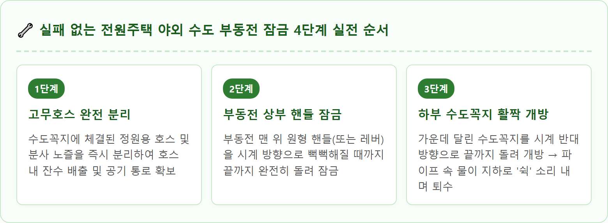
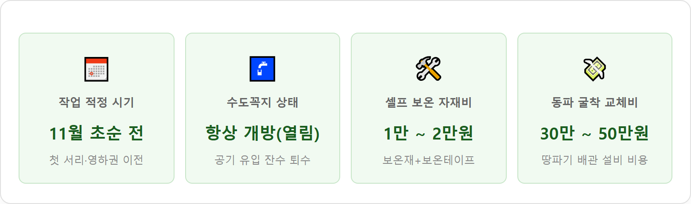

A detailed close-up instructional photograph of a stainless steel outdoor antifreeze frost-free yard hydrant faucet standing in the garden lawn of a modern rural Korean country house in late autumn. A homeowner's hands wearing durable work gloves demonstrate turning the top brass shutoff valve handle clockwise while leaving the front brass spigot tap wide open to drain residual water into the gravel drainage bed below. Thick foam pipe insulation and gray weather-resistant waterproof wrap are neatly installed along the lower vertical pipe stem. The garden background features warm autumn trees and a peaceful stone patio under clear late afternoon sunlight. Professional DIY home maintenance tutorial style, sharp focus, 1:1 aspect ratio.
도심 아파트에서 전원주택이나 타운하우스로 이주한 초보 주택 거주자들이 첫겨울에 가장 흔하게 겪는 대형 사고가 바로 마당 야외 수도 동파입니다.
아파트는 세대 배관이 실내 콘크리트 벽체 안쪽에 매립되어 외기에 직접 노출되지 않지만, 전원주택 마당의 야외 수도는 영하 10℃~15℃를 밑도는 혹한의 바람을 그대로 맞닥뜨리기 때문입니다.
물이 얼음으로 변할 때는 부피가 약 9~10% 팽창합니다. 밀폐된 금속 파이프나 플라스틱 연결 부속 내부에 물이 가득 차 있는 상태에서 얼어붙으면, 수천 기압에 달하는 팽창 압력을 이기지 못하고 배관 외벽이 세로로 찢어지거나 밸브 패킹이 터져 나갑니다.
동파 사고가 발생하면 단순히 수도를 못 쓰는 것에 그치지 않고, 날이 풀리는 해빙기에 땅속 배관에서 엄청난 양의 수돗물이 분출되어 마당 침하와 상수도 요금 폭탄으로 이어지게 됩니다.
야외 수도 동파를 막기 위해 설치되는 특수 장치가 바로 부동전(不凍栓, Frost-free yard hydrant)입니다.
부동전의 작동 메커니즘을 이해하면 왜 특정 순서로 잠가야 하는지 명확히 알 수 있습니다.
| 구성 요소 | 설치 위치 및 구조 | 주요 역할 및 작동 원리 |
|---|---|---|
| 상부 개폐 핸들 | 지상 80cm~1m 높이 부동전 꼭대기 | 긴 밸브 스템(연결봉)을 통해 지하 1m 아래 퇴수 밸브를 원격으로 여닫는 손잡이 |
| 토출 수도꼭지 | 지상 중간 부분 | 평상시 호스를 연결해 물을 쓰는 배출구. 겨울철에는 공기 흡입구 역할 |
| 지하 퇴수 밸브 (드레인홀) | 지하 동결심도(80~120cm) 아래 깊숙이 매설 | 상부 핸들을 잠그면 급수가 차단됨과 동시에 배관 내부의 물을 자갈 배수층으로 방류 |
| 동결심도 (Freezing depth) | 겨울철 땅이 어는 한계 깊이 | 중부 지방 기준 지하 80cm~1m 이상 깊이에는 외기 온도가 영하로 떨어져도 얼지 않음 |
즉, 부동전은 지상 노출 파이프에 물이 고여 있지 않도록 물을 모두 땅속으로 빼내어 '얼 물 자체를 없애는' 물리적 배수 원리로 동파를 방지합니다.

전원주택 거주자 10명 중 9명이 범하는 가장 흔한 실수는 "부동전 핸들도 잠그고, 수도꼭지도 잠그는 것"입니다.
평소 물을 잠글 때 수도꼭지를 닫던 습관 때문에 부동전을 잠근 후 수도꼭지까지 꽉 잠가버리는 경우가 많습니다.
수도꼭지를 닫으면 발생하는 현상:
빨대 끝을 손가락으로 막으면 빨대 안의 음료가 아래로 떨어지지 않는 것과 똑같은 원리입니다. 수도꼭지를 닫아버리면 파이프 상부에 진공이 형성되어 공기가 유입되지 못하므로, 지하 밸브가 열려 있어도 파이프 내부의 물이 아래로 빠져나가지 못하고 파이프 안에 그대로 갇히게 됩니다.
이 상태로 첫 영하 5℃ 추위만 닥쳐도 파이프 속 고인 물이 얼어붙으며 부동전 몸통이 터져버립니다. 따라서 수도꼭지는 물을 빼기 위해 여는 것뿐만 아니라, 겨울 내내 활짝 열린 상태로 방치해 두어야 안전합니다.

부동전 동파의 또 다른 주범은 마당 잔디나 텃밭에 물을 주던 고무호스를 수도꼭지에 그대로 꽂아두는 것입니다.
호스가 연결되어 있으면 호스 내부의 물이 밤사이 먼저 얼어붙어 수도꼭지 입구를 단단한 얼음 마개처럼 틀어막아 버립니다. 이로 인해 공기가 유입되지 않아 부동전 내부 잔수가 퇴수되지 못합니다.
월동 호스 관리 3단계:
1. 원터치 커플러나 밴드를 풀고 호스를 수도꼭지에서 완전히 분리합니다.
2. 호스를 바닥에 길게 늘어뜨려 호스 내부의 물을 완전히 털어냅니다.
3. 물을 뺀 호스는 둥글게 감아 햇볕과 눈비를 피할 수 있는 창고나 보일러실 실내로 옮겨 보관합니다 (외부 방치 시 호스가 경화되어 갈라짐).
퇴수를 완벽히 마쳤더라도 혹한기 한파가 지속되면 금속 파이프 자체를 통해 지중으로 냉기가 전달될 수 있으므로, 지상 노출부에 외단열 보온재를 시공해 주는 것이 안전합니다.
겨울철에도 야외 수도를 계속 써야 하는 단독주택의 경우 부동전 외벽에 동파방지 열선을 감아두기도 합니다. 하지만 열선은 겨울철 전원주택 화재의 주요 원인이 되므로 각별한 주의가 필요합니다.
• 열선 겹쳐 감기 절대 금지: 열선을 꽈배기처럼 겹쳐서 감으면 겹친 부위에 국소 과열이 발생하여 전선 피복이 녹아 누전 화재가 발생합니다. 반드시 2~3cm 간격을 두고 일자형으로 시공해야 합니다.
• 센서형 정온 전선 사용: 기온에 상관없이 전기가 계속 흐르는 저가형 열선 대신, 영상 5℃ 이하에서만 작동하고 온도가 오르면 자동으로 전력을 차단하는 센서 내장형 자기제어 정온전선(PTC)을 사용해야 안전합니다.
• 난연 보온재 마감: 열선 위를 마감하는 보온재는 불이 잘 붙지 않는 난연 1등급 소재를 선택하세요.
수년 이상 사용한 부동전은 내부 패킹 마모나 이물질 막힘으로 고장이 발생할 수 있습니다.
| 고장 증상 | 원인 분석 | 해결 방법 및 수리 가이드 |
|---|---|---|
| 핸들을 잠가도 물이 계속 졸졸 나옴 | 지하 하부 밸브 시트 고무 패킹 마모 또는 찢어짐 | 부동전 상부 헤드를 몽키스패너로 풀고 내부 긴 스템 막대를 뽑아 고무 패킹만 교체 (부품비 3,000원 선) |
| 핸들을 잠갔는데 퇴수 소리가 안 남 | 지하 퇴수구 구멍에 흙, 모래, 녹 찌꺼기 막힘 | 상부 핸들을 열고 닫기를 수차례 빠르게 반복하여 수압으로 찌꺼기를 밀어내기 시도 |
| 수도를 잠갔는데 계량기 별표가 계속 돎 | 부동전 지하 몸통 파열 또는 드레인 밸브 고장 | 마당 땅속 누수 상태. 계량기 밸브를 즉시 잠그고 굴착 교체 공사 진행 필요 |
만약 한겨울 방심하여 부동전이 동파되었다면 교체 방식에 따라 비용 차이가 매우 큽니다.
• 일체형 부동전 굴착 교체 (업체 호출): 전통적인 구형 부동전은 지하 1m 배관과 용접·나사로 연결되어 있어, 포클레인이나 삽으로 마당 땅을 파헤치고 잔디를 걷어내야 합니다. 설비 인건비와 굴착비 포함 평균 35만~50만 원의 큰 비용이 발생합니다.
• 교체형 부동전(속대 분리형) 셀프 교체: 최근 시공되는 신형 부동전은 땅을 파지 않고 상부 캡만 열면 내부 속대 파이프 전체가 쏙 빠지는 구조입니다. 부속 자재(스텐 속대 약 3만~5만 원)만 철물점에서 구매해 몽키스패너 하나로 10분 만에 자가 교체할 수 있습니다.
첫 서리가 내리기 전, 마당을 돌며 다음 4가지를 최종 확인하세요.
1. 11월 첫째 주 전 퇴수 완료: 기상청 일기예보에서 아침 최저기온이 처음으로 영하로 떨어지는 날 이전에 반드시 부동전 잠금 작업을 끝내야 합니다.
2. 마당 잔디 관수 시스템 배수: 지하에 매설된 자동 스프링클러나 빗물 재활용 탱크 배관도 에어 컴프레셔로 물을 불어내 잔수를 비워야 배관 파열을 막을 수 있습니다.
3. 수도 계량기함 보온재 충전: 마당 한구석에 있는 지하 수도계량기통 내부에도 헌 옷, 에어캡(뽁뽁이), 스티로폼 보온재를 가득 채우고 비닐로 덮어 빗물 유입을 차단하세요.